Wazn
A single mark. Three weights, one beam, one fulcrum. The system reduced to its lightest possible expression.
وزن · Halal capital, precisely weighted
Wazn
Rules decide. The AI advises. The owner approves. Nothing moves money on a hunch.
Mark & lockups
Sixteen outlined SVGs. No font dependency, no decoration. Weights in --ink, beam and fulcrum in --brass.
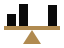
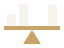
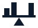
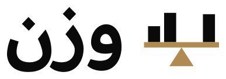
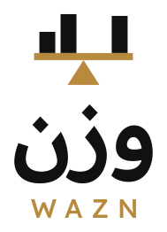
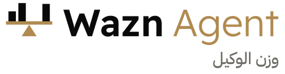
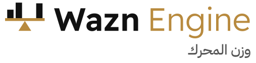
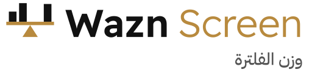
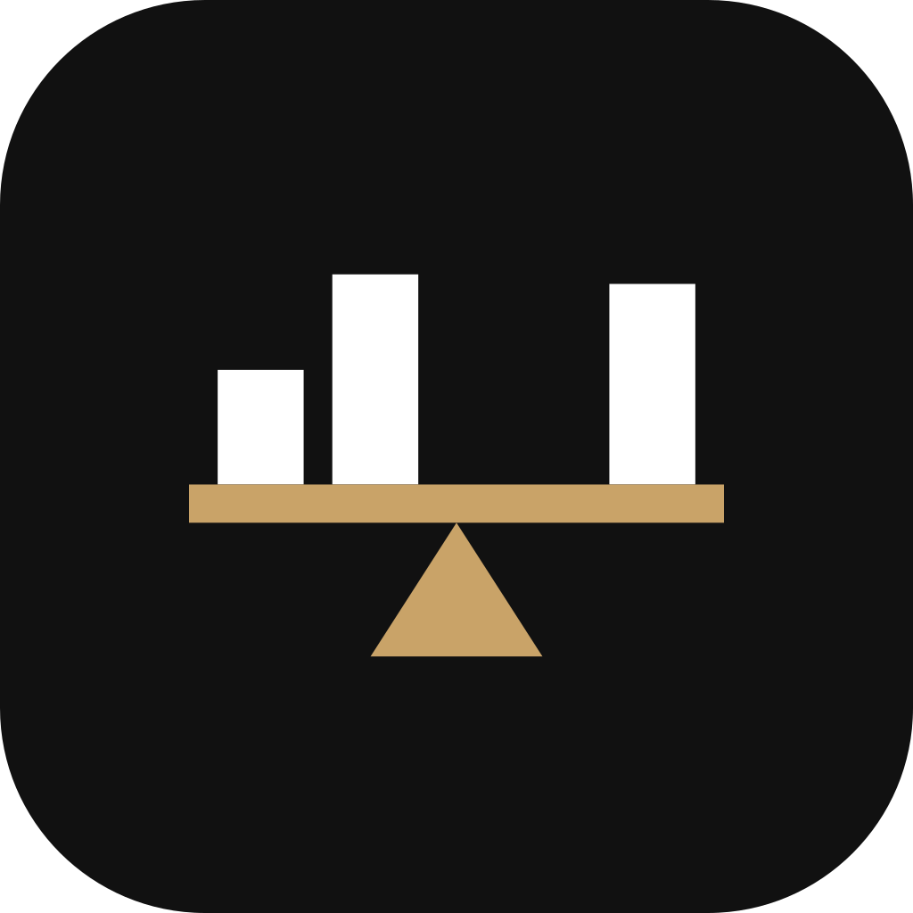
Paper & Graphite
Two themes. Monochrome ground, one restrained brass accent, three status colours that only earn their place with a shape or a word.
Readex & Plex
Readex Pro for display (geometric Arabic + Latin from one design). IBM Plex Sans Arabic for reading. IBM Plex Mono for every number.
UI kit
Hairline borders, no gratuitous fills, one accent. Every value is a token.
Button
Compliance badge
Stat
Weight bar
Holdings table
| السهم | الحالة | الكمية | متوسط التكلفة | السعر | الربح/الخسارة |
|---|---|---|---|---|---|
| ACME | متوافق | 1,200 | 96.40 | 104.25 | ▲ +8.14% |
| DEMO | تحت المراقبة | 850 | 52.10 | 49.80 | ▼ −4.41% |
| TEST | مستبعد | 300 | 18.00 | 18.60 | ▲ +3.33% |